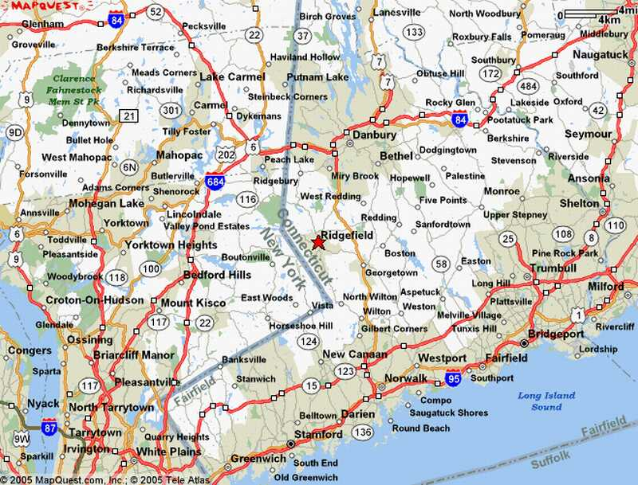

Web Mapping Fundamentals
What's a Web Map?
It's a Map
But not on paper
And not in a desktop application
On the Internet, accessible via browser
like

Usually interactive
Comprised of
TILES

Tiles?

History Detour
(somewhat accurate)
>>>
First there were Desktop Maps like
esri's ArcView
(which was later replaced by ArcMap)

In 1996
MapQuest launched their web service
Directions! Online! Whoa!
But it was pretty slow, required full page reloads to scroll or zoom, and was aligned to specific boundaries

Smooth scrolling & zooming
What was the big change?
It was the
TILE
End of Detour

So what's so special about tiles?
All tiles
=
same size! 256x256 pixels
same boundaries
Tiles could be of a road map, a satellite photo, or any other spatially-referenced image

All these little tiles load
way faster than one big map.
Web maps like this load the tiles that are on your screen. If the map is “smart,” it will pre-load tiles outside of the screen, along the top, bottom, left, and right.
This kind of map is colloquially called a
slippy mapThe tiles are divided in zoom levels
Each zoom level has its own set of tiles!
 Zoom level 0: one tile for the world.
Zoom level 0: one tile for the world.With each additional zoom level, the number of tiles increases exponentially.
 Zoom level 1: 4 tiles for the world.
Zoom level 1: 4 tiles for the world. Zoom level 2, 3, 4, 5
Zoom level 2, 3, 4, 5 Zoom level 13
Zoom level 13Tiles are rendered in advance (usually) then stored in a cache
Map tiles are just images on the web, so you can link to them individually.
In order to understand how this works, let's break down the URL.
http://tile.openstreetmap.org/4/2/6.png -- this is the name of the tile server.
http://tile.openstreetmap.org/4/2/6.png -- this is the z value, or the zoom level.
http://tile.openstreetmap.org/4/2/6.png -- This is the x/y value, or the place in the grid where the tile lives.
Google maps use the Mercator projection, which was designed for sailors BUT works well for flat maps.
Projection Detour
The Earth is Round
A Map is Flat
DOH!
TODO: TMCW Content on Mercator Projection
- quote that it will never be perfect (show curved surface on flat)
- preserves conformity (locally looks right - right angles)
- but there are tradeoffs
- doesn't preserve size (show image)
End of Detour
So we have tiles
which usually form a Base Map
We can also have Vectors!
Points, lines, polygons
OH MY
Add interaction

Let's Make a Map!
 OpenStreetMap
OpenStreetMap Flat, not a digital globe like Google Earth
Flat, not a digital globe like Google Earth
{kind=link}